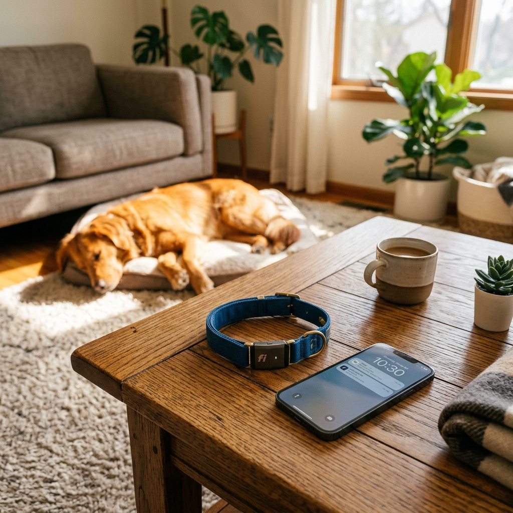

Estrategia de Visibilidad y Analítica GA4
Nuestra plataforma conecta sus 49 páginas indexadas, la Demo App interactiva (6 pestañas SPA), el Simulador Financiero y el Asistente IA WebGPU con Google Analytics 4, Tag Manager y Search Console en tiempo real.
1. SEO Local y Geolocalización (B2B)
Nuestra red de socios profesionales se beneficia de una estrategia de **Local Business SEO**. Cada clínica, paseador y tienda asociada tiene una página optimizada con microdatos que permite a CUDI derivar tráfico orgánico según la ubicación en tiempo real de la mascota, capturada por el Smart Collar.
- Integración con Google Maps API
- Microdatos de Schema.org para negocios locales
- Optimización por barrios y zonas metropolitanas
2. Portal Educativo: SEO de Larga Cola
El portal preventivo de CUDI ataca intenciones de búsqueda informativas mediante artículos técnicos de alta autoridad (E-E-A-T). Respondemos a las dudas de salud antes de que se conviertan en emergencias, posicionándonos como el recurso de referencia para familias multiespecie.
Keywords de Mantenimiento:
"ansiedad por separación", "nutrición orgánica canina", "telemetría veterinaria", "seguimiento GPS gatos".
3. Optimización Técnica y Funnel
Core Web Vitals
Carga ultra-rápida y diseño responsive adaptado a móviles (Mobile-first).
Semántica HTML5
Uso estricto de etiquetas semánticas para una lectura perfecta por parte de arañas.
Analítica Convergente
Tracking de eventos de conversión desde el blog hasta el checkout final.
